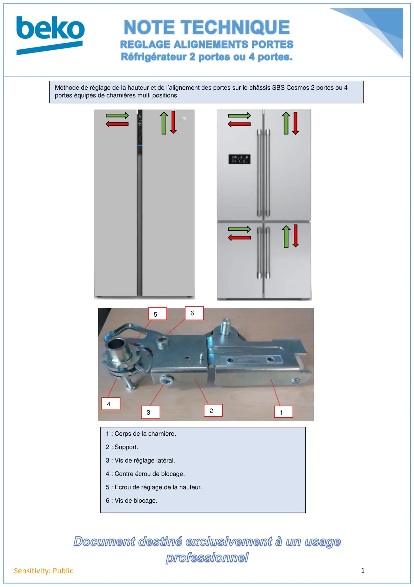
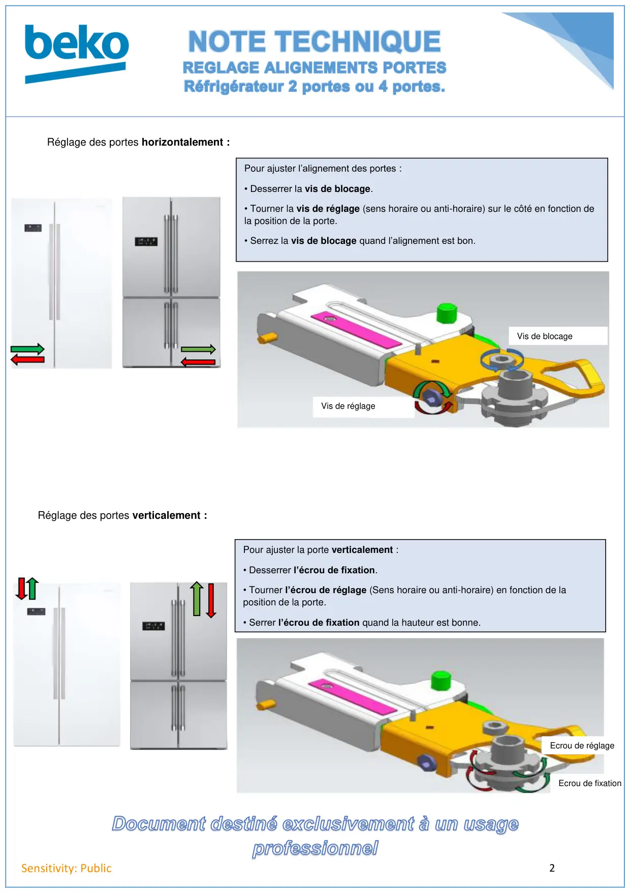

Réglage hauteur porte chassis cosmos multiportes

1Sensitivity: PublicMéthode de réglage de la hauteur et de l’alignement des portes sur le châssis SBS Cosmos 2 portes ou 4portes équipés de charnières multi positions.3421651 : Corps de la charnière.2 : Support.3 : Vis de réglage latéral.4 : Contre écrou de blocage.5 : Ecrou de réglage de la hauteur.6 : Vis de blocage.
1 / 2
2Sensitivity: PublicRéglage des portes verticalement :Ecrou de fixationEcrou de réglagePour ajuster la porte verticalement :• Desserrer l’écrou de fixation.• Tourner l’écrou de réglage (Sens horaire ou anti-horaire) en fonction de laposition de la porte.• Serrer l’écrou de fixation quand la hauteur est bonne.Réglage des portes horizontalement :Pour ajuster l’alignement des portes :• Desserrer la vis de blocage.• Tourner la vis de réglage (sens horaire ou anti-horaire) sur le côté en fonction dela position de la porte.• Serrez la vis de blocage quand l’alignement est bon.Vis de blocageVis de réglage
2 / 2